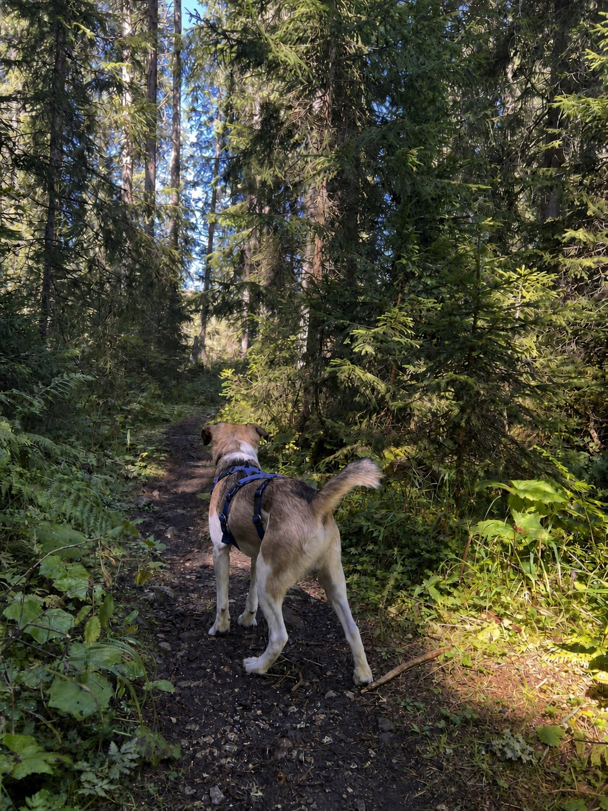

← Back to Safety LibraryPaw protection for mountain trails
Choose today’s main surface, then use the stop signs, checks and first-aid guidance that match it.
What is underfoot today?
The advice changes with the ground. Select the condition your dog will repeat for most of the walk.
Choose a cooler time or another route
Sun-heated stone can burn pads even when the air feels comfortable. Exposed rock also stays hot after the temperature begins to fall.
- Before: Check shade and press the back of your hand to the surface for five seconds.
- During: Use shaded breaks and test again whenever the trail surface changes.
- Stop if: Your dog lifts paws, seeks every patch of shade, licks repeatedly or changes stride.
Slow the pace and shorten the distance
Angular limestone and sliding scree abrade pad rims with every step. Long descents are often harder on paws than the climb.
- Before: Inspect pads and nails. Use boots only if they have already been fitted and practised.
- During: Check after the first rough section and at every break before continuing.
- Stop if: The stride shortens, one paw is lifted, a rim starts to fray or a nail is damaged.
Prevent buildup between the toes
Packed snow, ice and path salt rub between toes and can irritate already dry pads. Debris may stay hidden until the walk home.
- Before: Trim excess paw fur, inspect for existing cracks and carry clean water for rinsing.
- During: Remove buildup gently whenever it forms; rinse away grit or salt and dry carefully between the toes.
- Stop if: Ice balls form repeatedly, skin looks red, a paw is held up or your dog resists walking.
Learn more
Open by default. Collapse anything you do not need.
01Choosing and fitting bootsWhen they protect and when they create rubbing or heat
Use boots for a known surface problem—not to make an unsuitable route safe. Fit and practise with them at home before mountain use.
Boots can help
On scree, crusted snow, salted paths or a protected walk-out.
Boots can hurt
If new, tight, gritty or hot. Stop and refit at the first rub.
Balms condition; they do not armour. Apply the evening before or after, never just before rocky ground.
02The 60-second paw checkSix places to inspect at every break
Check one paw at a time and compare all four for changes in colour, temperature or sensitivity.
- Between the toes: grit, seeds, resin or packed snow.
- Pad rims: pale fraying or a lifted flap.
- Pad surfaces: shiny, thin or tender areas.
- Nails and dewclaws: snags, splits or bleeding.
- Wrists and stopper pads: scrapes from loose stone.
- The walk itself: watch ten steps after the break.
03Conditioning paws for mountain terrainBuild the surface before adding distance
Everyday distance does not guarantee readiness for limestone or scree. Build exposure to the actual surface gradually.
- Build: add time on familiar ground before changing the surface.
- Rehearse: try one short route with the real ground and equipment.
- Recover: recheck gait and pads that evening and next morning.
- Change one variable: duration, climb or surface—not all three.
04First aid and veterinary helpWhat to do for a cut pad and when it is urgent
Stop walking. Rinse with clean water, remove only loose debris and never dig for an object. Apply steady pressure, add a loose non-stick dressing and carry your dog if possible.
Seek urgent veterinary help for severe or persistent bleeding after 10 to 15 minutes of steady pressure, a deep or gaping wound, exposed tissue, a deeply embedded object, or a dog that cannot stand or walk.
Sources and medical referencesLast reviewed 19 August 2026
Veterinary material consulted: VCA Animal Hospitals on first aid for injured foot pads, Merck Veterinary Manual on wound management, and American Kennel Club guidance on dog boots. When this page and the mountain disagree, believe the mountain.
This is general information, not a diagnosis or a substitute for veterinary care.